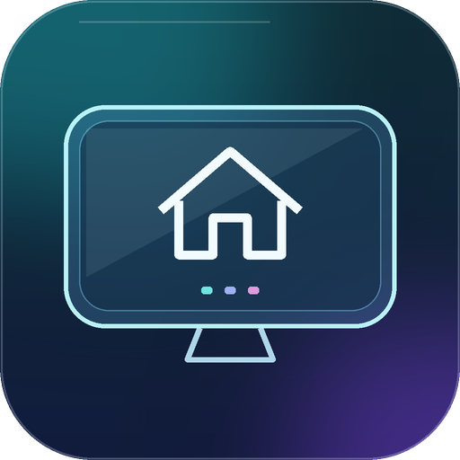

WELCOME HOME
LG webOS Glass Home
Your native Home. A clearer, more personal experience.
Version 1.0
GitHub
Make yourself at Home.
First-time setup is automatic. Reopen this app whenever you need to restore stock Home.
NO EXTRA CLICKS
PREPARING YOUR EXPERIENCE
IN PROGRESS
Checking the packaged configuration and rooted Homebrew service...
This can take up to a minute. Please keep your TV on.
CHECK INSTALLATIONNEXT: SETUP OR RESTORE
First-time setup opens your custom Home automatically.
Your TV stays yours.
Existing preferences, wallpapers, HDMI calibrations and unrelated services are preserved.
BUILT ON NATIVE webOS
Want to return to stock Home?
Reopen this app and choose Restore stock Home before uninstalling.
Restores pre-install settings. Saved wallpapers, preferences and backups are retained.
Point here, then click to begin